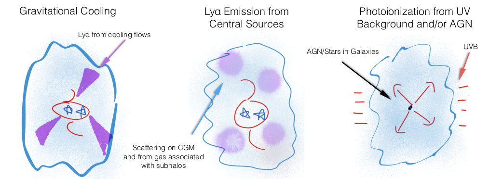
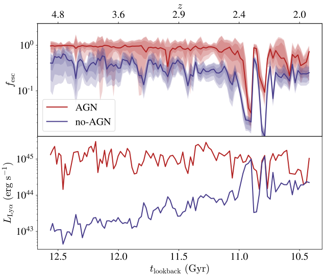

SpaceBlobs
Ben Kimock
Desika Narayanan, Aaron Smith, the FIRE collaboration
saethlin.github.io/dissertation
Lyman-alpha Blobs in cosmological simulations
Ben Kimock
Desika Narayanan, Aaron Smith, the FIRE collaboration
saethlin.github.io/dissertation
Lyman-alpha emission and escape from massive galaxies at high redshift in cosmological simulations
Ben Kimock
Desika Narayanan, Aaron Smith, the FIRE collaboration
saethlin.github.io/dissertation
What is Lyman-alpha?
121.6 nm
Resonant Scattering
What is a Lyman-alpha Blob?
Massive: (~100 kpc "in extent")
Luminous: (~1043 erg/s)
Steidel et al. 2000
Why does anyone care? Reionization


Why does anyone care? High-z Observations
What Could Power Blobs?
sketch by Desika Narayanan
So how do we simulate all those?

https://xkcd.com/1831/
How to MCRT
- Emission
- Propagation
- Scattering
- ???
- Profit
Lyman-alpha Emission

Model Inputs


Ionization State


Lyα Emissivity


Lyman-alpha Propagation: Random Optical Depth

Lyman-alpha Propagation: Lorentz Transformation

Lyman-alpha Propagation: Find New Cell

Lyman-alpha Scattering
So... Do we have a Blob?

So... Is it a Blob?

What is the source of Lyα?

Collisional excitations
...not necessarily cooling streams
But what about the AGN?
Ionization State (without/with AGN)

What is the source of Lyα (with AGN)?
Escape fraction depends on source
Elevated ionization and escape fraction
Suppression of collisional excitation
RT Matters!

Escape fraction is not close to unity
Strong line-of-sight dependence
Spectrum is not easy to interpret

Conclusions
Our model (zooms + ionizing MCRT + Lyα MCRT) reproduces observations of LABs
LABs may be powered by emission from collisional excitations, but not necessarily cooling streams
AGN have a dramatic impact on what physical mechanism powers LABs
The Lyα escape fraction from LABs is highly orientation-dependent, particularly in the presence of AGN
RT Matters!

Escape fraction is not close to unity
Strong line-of-sight dependence
Spectrum is not easy to interpret